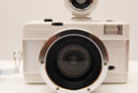
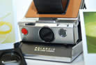

數位相機
（Digital Camera）
以內部光學原理的不同，區分為消費型數位相機，單眼數位相機。數位相機是利用感光元件把光學影像轉換成電子訊號的照相機。在影像傳輸到電腦以前，通常會先儲存在相機內部數位儲存設備中。

輕便相機
（P&S Camera）
Point-and-shoot camera也稱compact camera，相機在設計上主要的操作簡單。大多使用自動對焦或固定對焦，系統自動設置曝光選項並內置閃光燈。

玩具相機
（Toy Camera）
玩具相機構造簡單，使用塑膠等廉價的材料製作，通常包括鏡頭。許多專業攝影師利用玩具相機和容易產生奇怪光學效應的廉價鏡頭進行創作。
玩具相機
（Toy Camera）
玩具相機構造簡單，使用塑膠等廉價的材料製作，通常包括鏡頭。許多專業攝影師利用玩具相機和容易產生奇怪光學效應的廉價鏡頭進行創作。

SX-70
1972年寶麗來推出SX-70袖珍型即時成像相機，隨即風靡世界，到70年代中期時共售出了600萬台。SX-70是第一台使用Polaroid盒裝底片的機種。機身是鍍銀色的塑膠材質，外層包附貼皮，握感紮實，收納起來高度不超過公分，收納非常方便。
SX-70
1972年寶麗來推出SX-70袖珍型即時成像相機，隨即風靡世界，到70年代中期時共售出了600萬台。SX-70是第一台使用Polaroid盒裝底片的機種。機身是鍍銀色的塑膠材質，外層包附貼皮，握感紮實，收納起來高度不超過公分，收納非常方便。